✦ KHUSUS LAKI-LAKI UMUM
Sabtu, 19 September 2026
◷ Pukul 19:30 WIB – Selesai
Rangkaian pembacaan Maulid Simthud Durar, dzikir bersama, dan tausyiah akbar peringatan Maulid Nabi SAW.
UNDANGAN RESMI • MAULID NABI
Majelis Ta'lim Al-Fathonah
اللهم صل وسلم وبارك عليه
Allahumma shalli wasallim wa baarik 'alayh
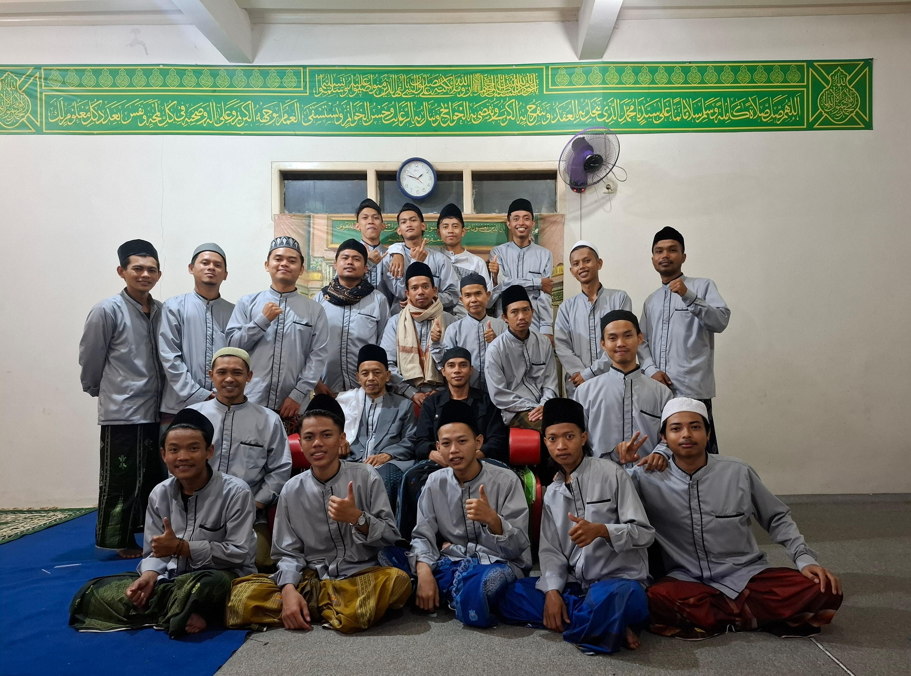
Dengan memohon rahmat dan ridho Allah SWT, kami mengundang segenap kaum muslimin & muslimat untuk menghadiri majelis ilmu dan dzikir bersama.
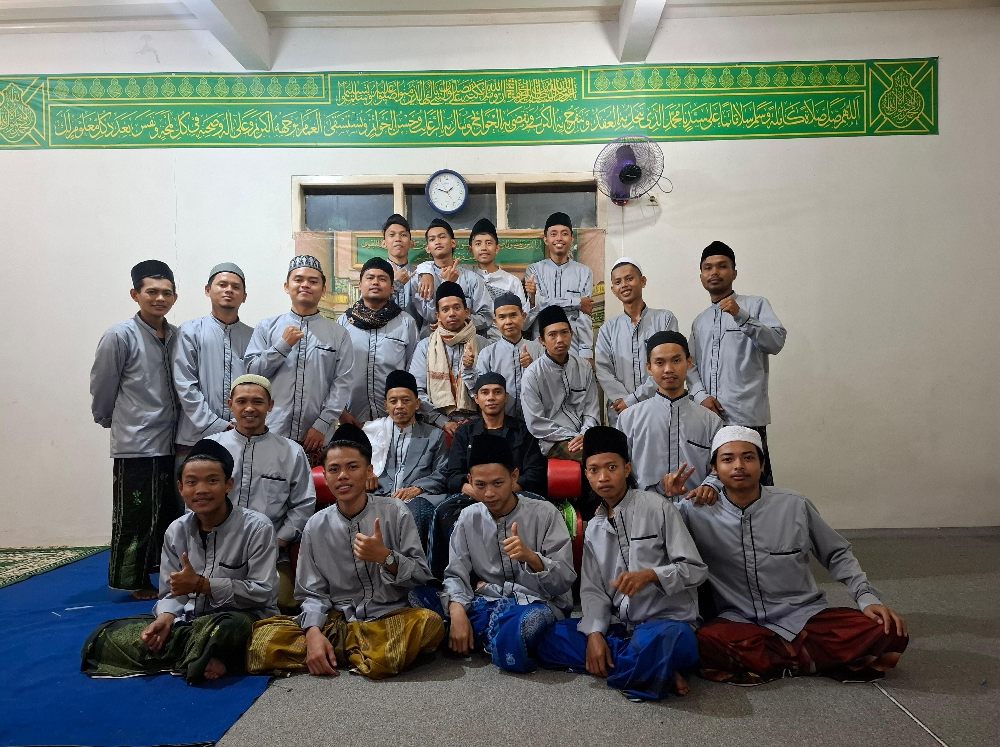
Sabtu, 19 September 2026
◷ Pukul 19:30 WIB – Selesai
Rangkaian pembacaan Maulid Simthud Durar, dzikir bersama, dan tausyiah akbar peringatan Maulid Nabi SAW.
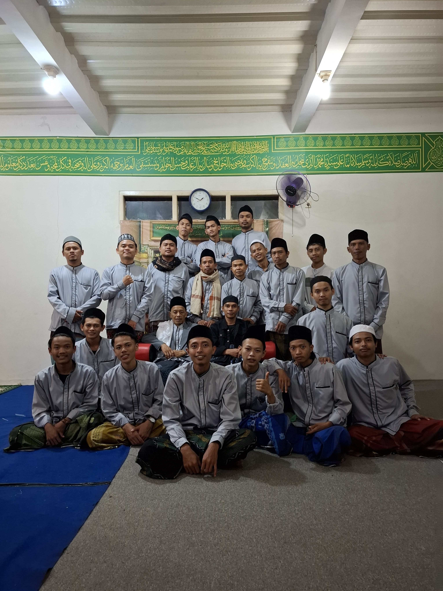
K.H. Muhammad Qomunuddin
(Abah Lewimalang)
Pimpinan Pondok Pesantren
Roudlotul Ulum
“Meneladani Akhlak Sayyidul Anbiya Muhammad SAW sebagai fondasi membangun Berakhlakul Karimah.”
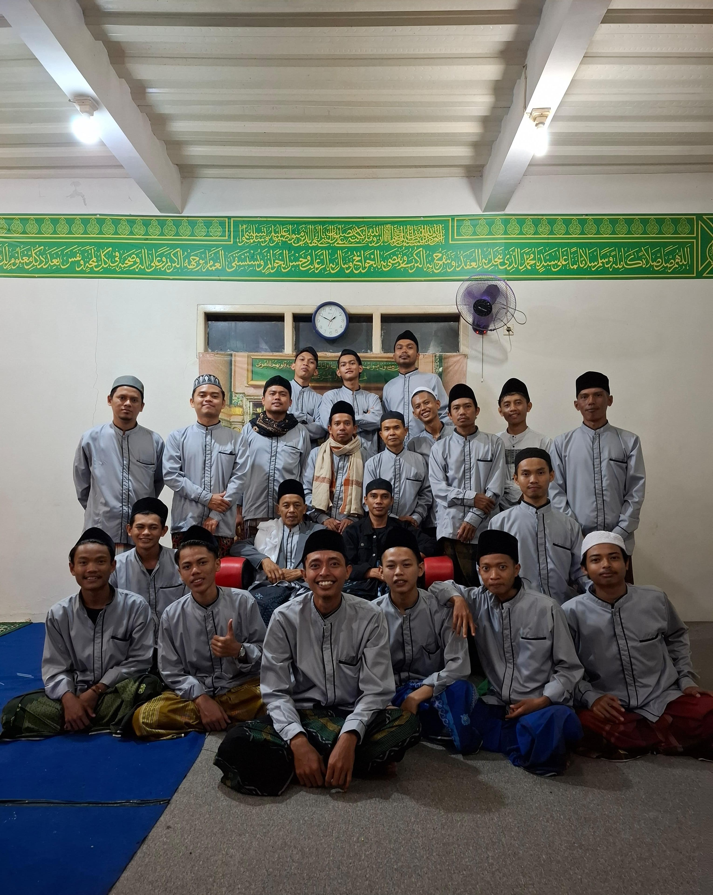
Majelis Ta'lim Al-Fathonah
Jl. Baros, Gg H Sulaeman, Sukataris,
Kec. Karangtengah, Kabupaten Cianjur, Jawa Barat 43281
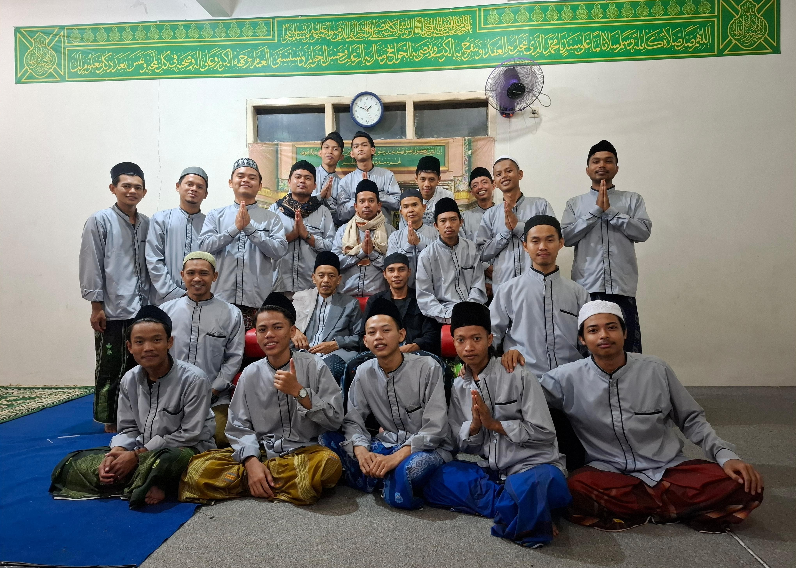
Bagi Bapak/Ibu/Saudara/i yang berkenan berinfaq untuk kelancaran kegiatan Maulid Nabi SAW, infaq dapat disalurkan melalui:
a.n. Hamid Abdulrahman
a.n. Reyhan Tri Ramadhan
Konfirmasi bukti partisipasi/infaq dapat disampaikan langsung kepada panitia majelis.
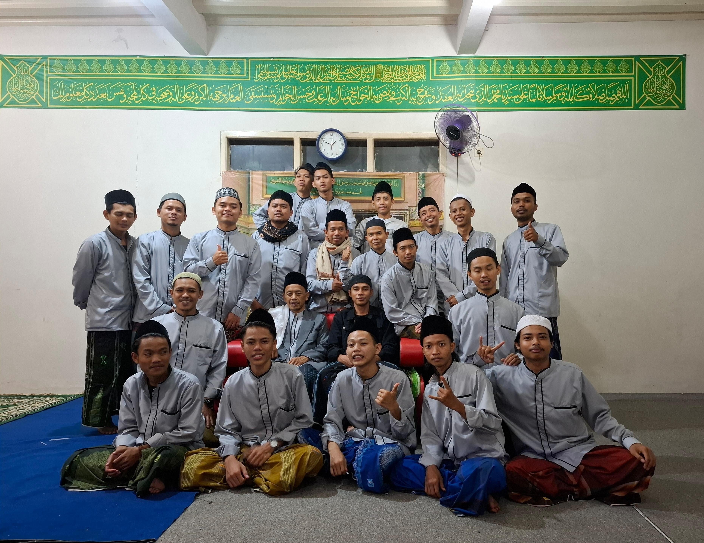
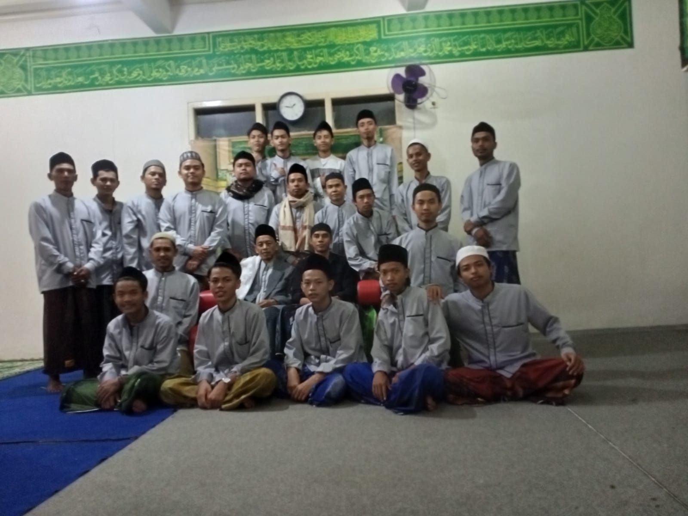
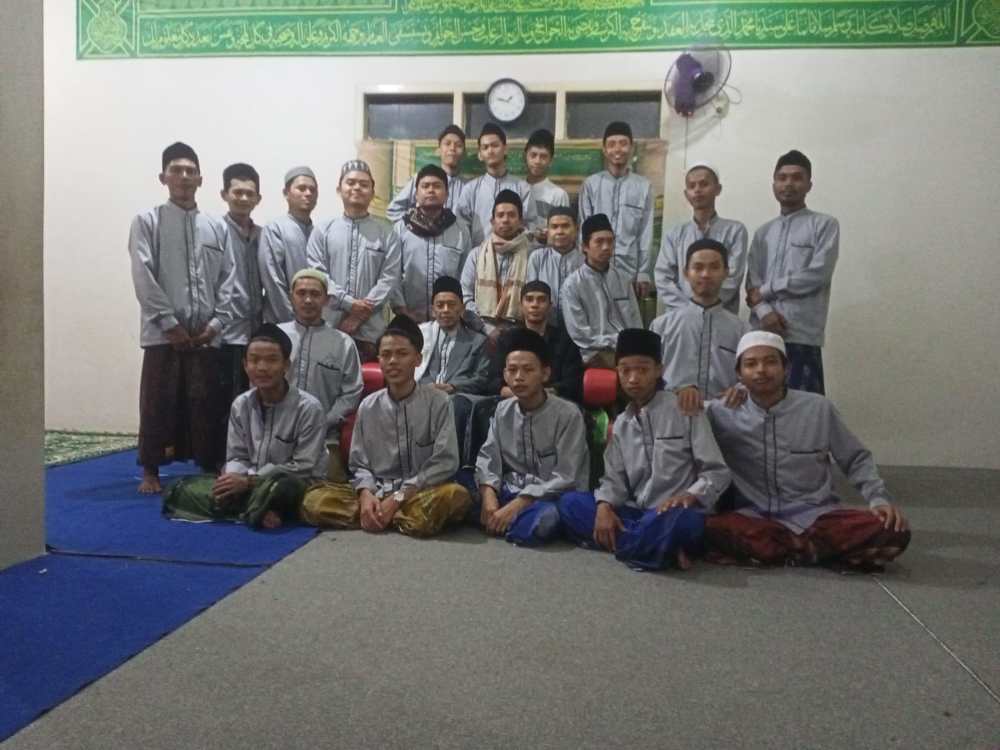
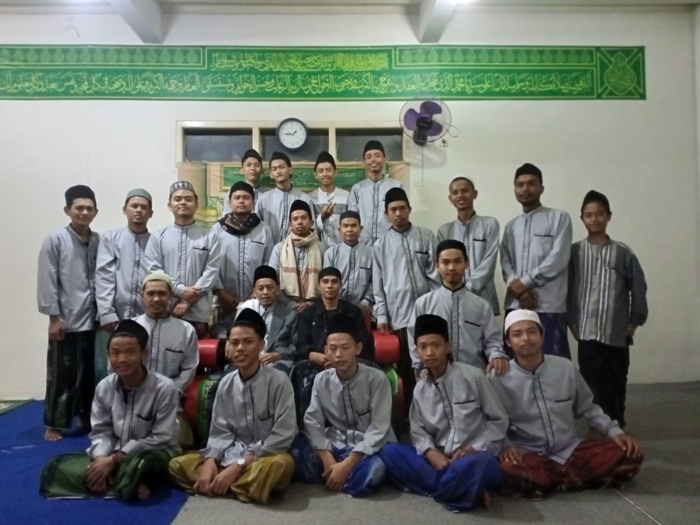
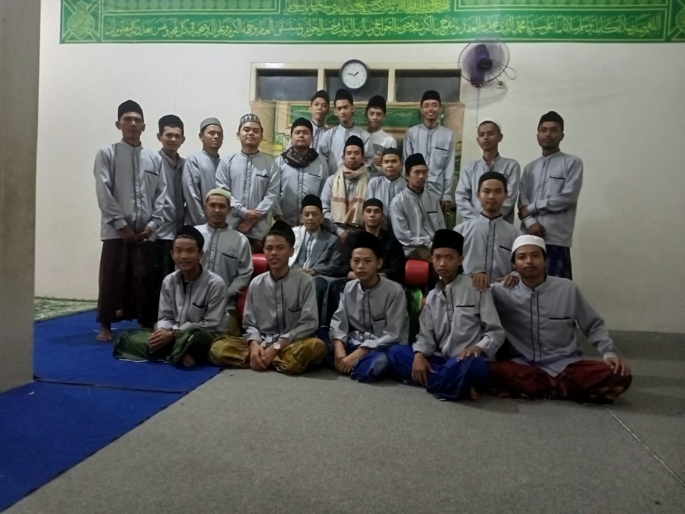
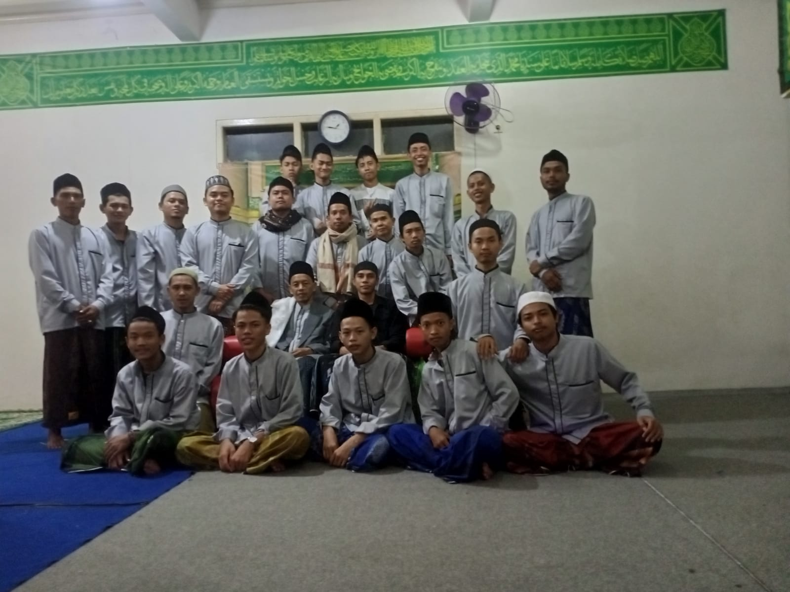
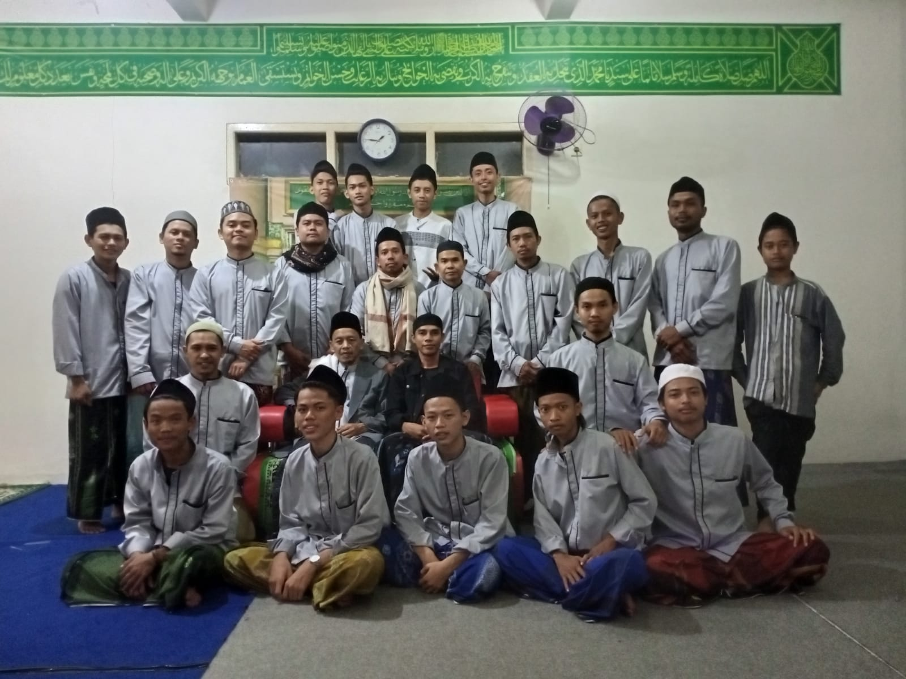
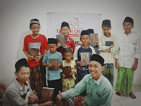
.jpg)
.jpg)
.jpg)